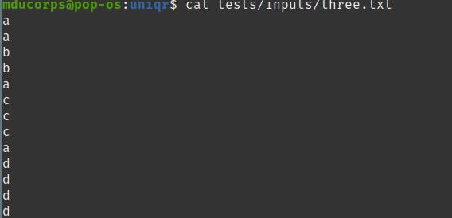
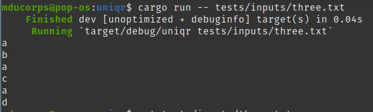
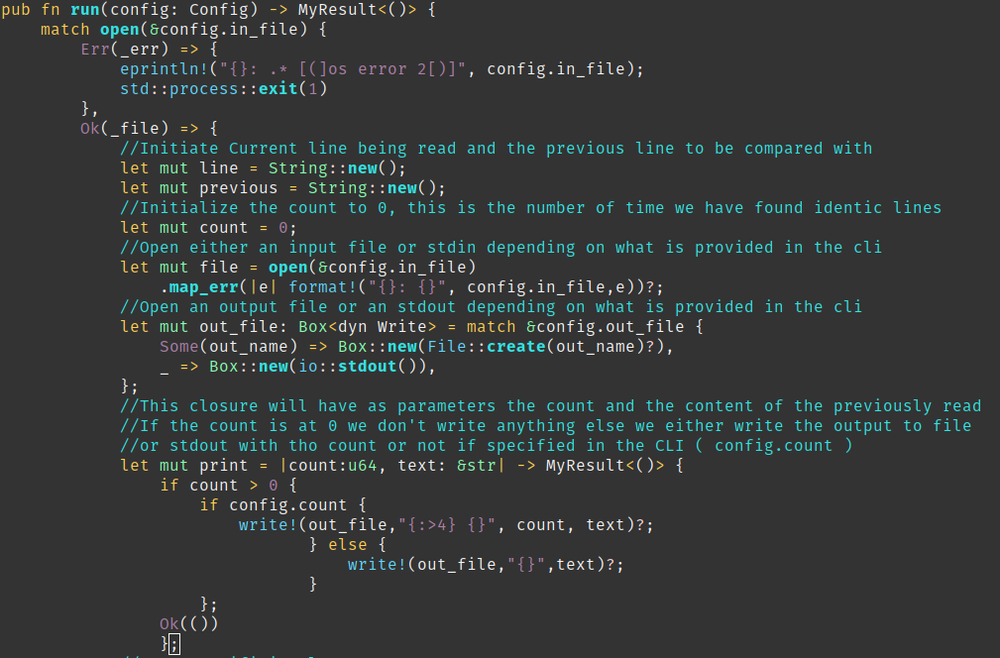
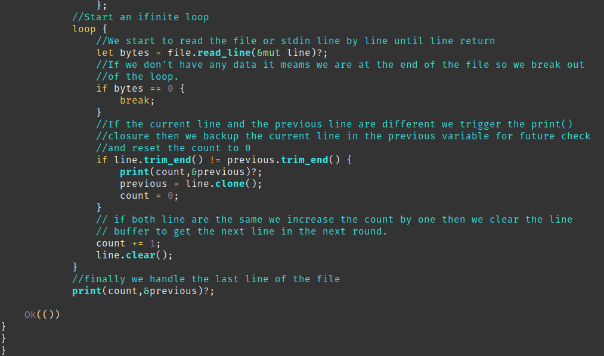

This was a very difficult one for me this time.
I have not much a developer background it is difficult to build the algorithm for me.
If it was a twitch live you would have seen me swaring for hours trying to find a way with if loop every where and terrible solution which was working for one specific goal but totally broken when I was trying to add a new parameter in the equation.
I have been trying to re-create uniq which is give you as output 1 instance of consecutive lines.
For instance, given this input

The uniq output looks like this:

The difficult part was for me to compare the current read line with the previous one to confirm if they are the same, so we print only one instance of the same lines
On top of that I had to count the number of instances.
I would like to go through this code explanation because this is quite efficient with Rust and impressively in few lines this is very beautifully handle.
For cleanless I have commented directly in the code linkeding having a very poor formating capability I found it easier to read directly with the color coding of my editor.
The first part «match open()» is the same as all my previous programs, this is to open the file or the stdin and handle errors if any.
Then you will find in this piece of code essentially the initialisation and the closure to mange the stdout.

In this second par this is the loop which is responsible of comparing the lines and call the print closure to output the content.

I have to say this is beautiful isn’t it ?
I want more ! What will be my next challenge ?
What about some ratatouille ? Stay tune to see what will happen.
As usual my code is here:
https://git.sr.ht/~vagrantin/uniqr
With kind regards
Matthieu